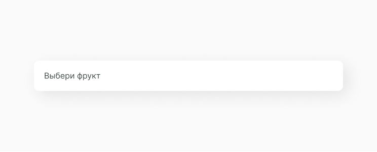
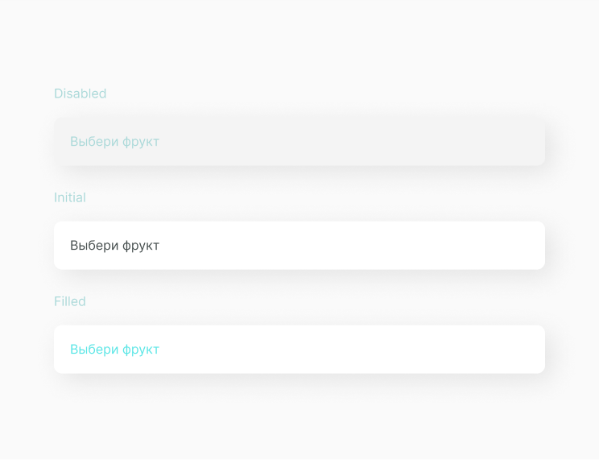
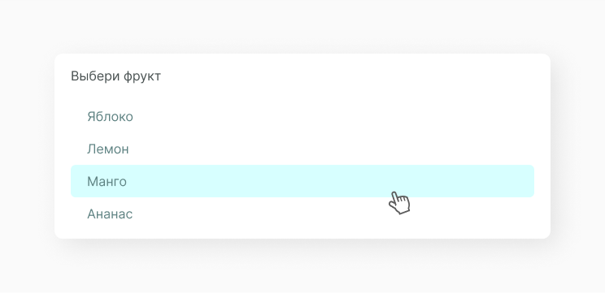
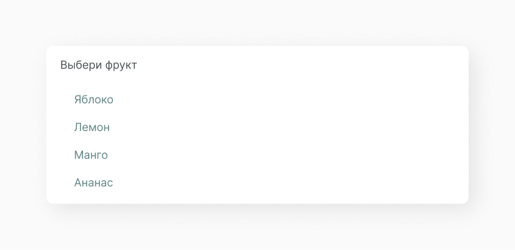

Select Input
В HTML тег <select> позволяет создать элемент интерфейса в виде раскрывающегося списка. Но обычно мы его не используем из-за сложной кастомизации стилей. Вместо <select> работаем с обычным <div> для которого задаем все необходимые параметры.
В основном select input используют в различных формах входа заполнения данных, когда нужно сделать единичный выбор из выпадающего option list.
Структура компонента
Select input состоит из поля input с атрибутом placeholder, option list и, в зависимости от функционала, иконки chevrone, которая анинируется во время пользовательского действия. Этот пример не содержит chevrone, так как option list открывается при нажатии на input.
Placeholder
Текст placeholder обычно имеет более светлую расцветку и содержит информацию о том, какое действие должен совершить пользователь.
Состояние компонента
Исходя из структуры, мы можем выявить несколько состояний компонента с данными и без них.
А также состояние select input, когда открыт option list.
Реализация
Компонент должен принимать некоторые параметры и содержать внутри себя коллекцию из option item.
import React, { PureComponent } from 'react'
import A_Input from '../../atoms/A_Input/A_Input.jsx'
import A_OptionItem from '../../atoms/A_OptionItem/A_OptionItem.jsx'
import './O_Select.css'
export default class O_Select extends PureComponent {
constructor(props) {
super(props)
this.state = {
value: '',
options: props.options,
showOptions: false,
disabled: props.disabled
}
}
setVisibleOptions = (visible) => {
if (this.state.disabled) {
return
}
this.setState((preState) => ({
...preState,
showOptions: visible
}))
}
handleSelectOption = (id, value) => {
this.setState((prevState) => ({
...prevState,
value: value,
showOptions: false
}))
}
handleChangeValue = (e) => {
this.setState((prevState) => ({
...prevState,
value: e.target.value
}))
}
render() {
const { placeholder } = this.props
const { options, showOptions, value } = this.state
const optionElements = options.map((option) => (
<A_OptionItem
key={option.id}
id={option.id}
value={option.value}
onSelect={this.handleSelectOption}
/>
))
const optionCollection = (
<div className="C_OptionsList">{optionElements}</div>
)
return (
<div className="O_Select">
<A_Input
placeholder={placeholder}
value={value}
onChange={this.handleChangeValue}
onFocus={() => {
this.setVisibleOptions(true)
}}
/>
{showOptions && optionCollection}
</div>
)
}
}Прописываем стили для select input и среду для option list.
.O_Select {
box-shadow: 9px 9px 35px rgba(0, 0, 0, 0.09);
margin: 20% auto;
width: 610px;
border-radius: 10px;
}
.O_Select .C_OptionsList {
margin-top: -15px;
background-color: #fff f;
padding: 40px 20px 20px 20px;
}Мы создали компонент, но описали только его функционал, теперь его нужно отрендерить. Выведи получившийся компонент согласно своей структуре проекта. Ты можешь увидеть как это делаем мы, а также посмотреть получившийся select input.
import React from 'react'
import ReactDOM from 'react-dom'
import O_Select from '../../components/organisms/O_Select/O_Select.jsx'
const options = [
{
id: '1',
value: 'Ананас'
},
{
id: '2',
value: 'Лемон'
},
{
id: '3',
value: 'Кокос'
},
{
id: '4',
value: 'Мандарин'
}
]
document.addEventListener('DOMContentLoaded', () => {
ReactDOM.render(
<O_Select placeholder="Твой любимый фрукт" options={options} />,
document.body
)
})Получаем следующий результат:
Составляющие
В этот компонент часто выводятся следующие компоненты.
Input
Функциональный элемент взяимодействия с интерфейсом.
Option Item
Функциональный элемент выпадающего спасска.
Этот компонент часто выводится в следующих компонентах.